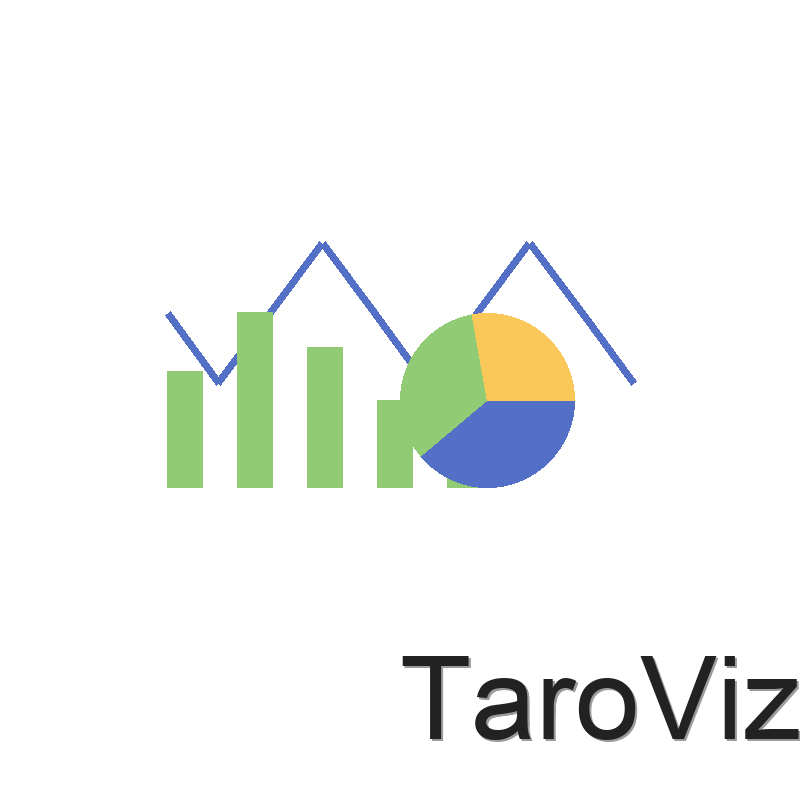

TaroViz
基于 Taro 和 ECharts 的多端图表组件库
bash
# 安装
npm install @agions/taroviz
# 或使用 pnpm
pnpm add @agions/taroviz
jsx
import { LineChart } from '@agions/taroviz';
const App = () => {
const data = {
xAxis: ['Mon', 'Tue', 'Wed', 'Thu', 'Fri'],
series: [150, 230, 224, 218, 135]
};
return (